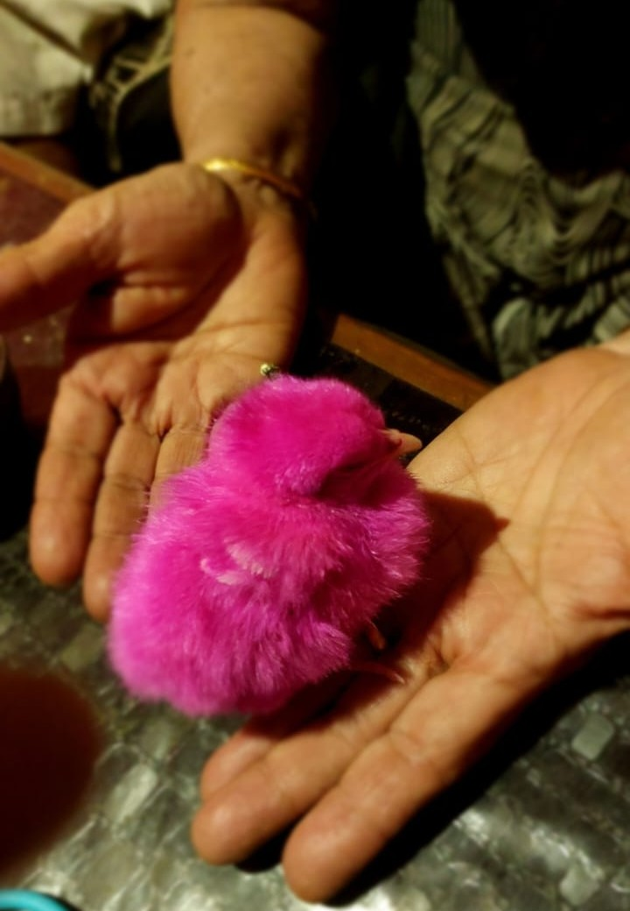

For Every Animal Left Behind, a Piece of Humanity Is Lost
In the shadows, they hide,
With hunger deep inside.
In their innocent eyes
Lies a plea for love that never dies.
Where words meet silence, and images breathe.
In the shadows, they hide,
With hunger deep inside.
In their innocent eyes
Lies a plea for love that never dies.
As the sunlight touches my peepers,
In childhood, we were dream seekers.
Searching for life’s hidden treasures,
Far away from adult pleasures.
They say fear is our greatest weakness,
Yet I’ve only seen hate become
Someone’s appraiser,
By filling their souls with inadequacy.
Beneath the moon’s soft, tender glow,
Waves whisper secrets they crave to show.
In the shimmer of night, love finds its way,
A blissful dance where hearts gently sway.
As the angel whispers in my ear,
A sensation profound and sheer.
Love is a gift from the divine,
Never let go of that sacred shine.
Nature’s beauty in this morning scene,
A peaceful moment, calm and serene.
As the world awakens, a new day begins,
With the sun, the birds, and the city’s spins.

The sky aglow with colors so bright,
A breathtaking sight, a pure delight.
In harmony, they dance and play,
Capturing the essence of a brand-new day.
Dreamy days and skies so wide,
Boats and bubbles side by side.
Come and join the cheerful cheer,
In this land of wonder, calm, and dear.
In the silence where echoes softly dwell,
There’s one who listens, never to tell.
A haven of calm where fears dispel,
Yet why orchids he keeps away,
I cannot tell.
As dawn’s first light caresses the snow,
Mountains awaken with a gentle glow.
A dance of light on rugged crest,
Nature’s grand canvas at its very best.